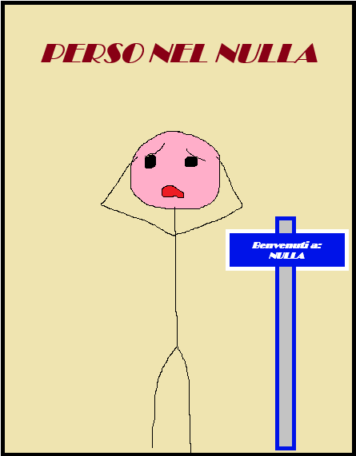
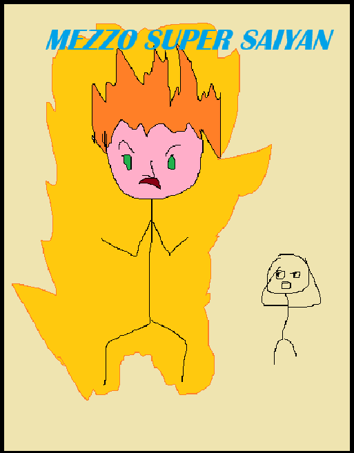

PERSO NEL NULLA - la commedia di Dwayne NoRock

Durata: 126', Trama: Il protagonista Norman NoCap, un normalissimo ragazzo italo-sassinide (di Sassari), si ritrova a viaggiare per le dimensioni per andare a cercare informazioni su suo padre proprio nella terra nativa di quest'ultimo: Foggia, ma si ritrova nel nulla...
MEZZO SUPER SAIYAN - Perso a Catanzaro!

Durata: 91', Trama: Un normalissimo ragazzo Calabrese scopre che sua madre viene chiamata dagli amici "Principessa Trunks" quindi egli pensa di essere un mezzo saiyan, parte all'avventura per diventare il leggendario (ma anche no) Mezzo Super Saiyan!
HAI MAI SOGNATO QUESTO DISEGNO? - il thriller di Stefano Spigola
Durata: 180.5', Trama: Nel nuovo thriller di Spigola un disegno compare nei sogni di coloro che abitano vicino al Simon Weil, l'investigatore: Cerco Lomes vuole arrivare a capire il perché di questi avvenimenti.